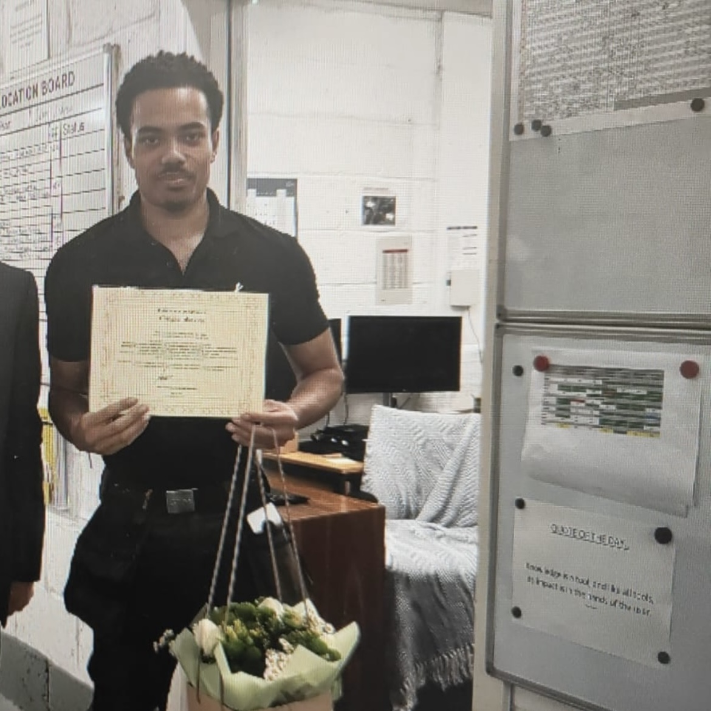

Kawayn Marley Ellis - CV
Summary

I am a hardworking, ambitious young man who is dedicated to doing my best in any task that I come across. I have excellent communication and cooperation skills due to working in many customer facing roles over the years. I thrive off of making a positive impact on both people's lives and the world as a whole. I currently work as a Property Maintenance Operative whilst also pursuing the path of software development in my free time.
Education
Southfields Academy (A-Level)
Date: 2018 to 2020
- Graphic Design - Grade A*
- Math - Grade B
- Economics - Grade C
Southfields Academy (GCSE)
Date: 2013 to 2018
- Math - Grade 8
- Spanish - Grade 8
- Computer Science - Grade 7
- Combined Science - Grade 7/6
- English Literature - Grade 6
- Statistics - Grade B
- English Language - Grade 5
- Business Studies - Grade C
Work Experience
Property Maintenance Operative (Park Plaza Hotel Group)
November 2023 to Present
I currently work as an Apprentice Property Maintenance Operative at the Park Plaza County Hall hotel - Working 4 days a week and attending Lewisham college once a week.
My main duties are:
- Electrical Repairs - Replacing light switches, plugs and sockets. Replacing LED lights, transformers and drivers. Installation of different light models and replacing bulbs. Rewiring of faulty lighting systems. Replacing starters and batteries on faulty lighting systems. Electrical tests such as emergency lighting etc.
- Plumbing Repairs - Changing tap cartridges, replacing damaged washers, changing plug mechanisms, replacing sinks, replacing flush valves in toilet, replacing toilet seats, unblocking sinks, toilets and shower drains etc.
- Minor Carpentry Repairs - Adjusting hinges on doors, replacing hinges on doors, fixing and replacing door locks, fixing shelves etc.
- Painting and Decorating - Painting rooms, small paint repairs, using filler to fill gaps in walls, tile replacement and grouting, caulking, siliconing, door/window frosting etc.
- PPM (Planned Preventative Maintenance) - Inspecting allocated rooms for any faults and then repairing them as required.
- Reactive Maintenance - Using the smartphone to respond to any spontaneous repairs/problems that arise. Tasks include: Replacing bulbs, Unlocking safes for guests, Unblocking sinks/toilets/shower drains, Changing shower heads, Fixing A/C issues, Repairing tap leaks and more.
- Regular Hotel Tests/Checks - Weekly water outlet flushing to reduce risks of Legionella and other water-based diseases, Weekly fire alarm tests, Descaling Showerheads, Replacing Air Conditioning Filters, Stepladder checks, Fire Door Checks, Disabled Room Alarm checks and more.
- Assisting subcontractors - Subcontractors include Plumbers, Electricians, Lift Engineers, Window Cleaners, Water Hygiene Specialists and more.
Grill Chef (Nando's)
December 2022 to June 2023
I worked as a grill chef at Nandos. Although my main role was cooking on the front grill, I have strong experience within the entire store - the back grill, the line, the frying station, tills, packing delivery orders, kitchen porter etc.
Labourer (Marama Building Services Ltd)
September 2022 to December 2022
I worked as a labourer for a construction firm that handles the development of building projects and the construction of domestic buildings. I have worked alongside tradesmen in many different sectors involving plumbers, electricians, bricklayers, carpenters and many more.
My main duties were:
- Accurately digging trenches for foundations and assisting concrete pours
- Making bricklayer's mortar and concrete mixes for foundations
- Assisting experienced roofers strip old roof tiles and rafters and helping them place new ones
- Taking down exterior brick walls/windows and ripping out old furniture
- Using a range of hand and power tools safely
- Cleaning the site and packing tools away at the end of the day
- Maintaining a good relationship with both clients and the people I work with
Skills
- Problem Solving
- Strong Communication
- Strong Numerical Skills
- Fault Finding
- Leadership and Organisation
- Web Development
My Hobbies
Contact Me